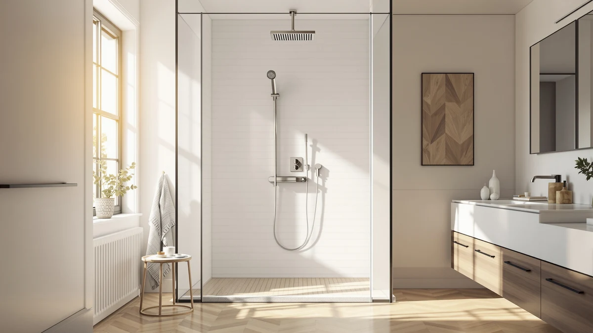

Quick Answer
Our Blue Ocean 52" stainless review comes down to this: the stainless steel version is the better default pick over Blue Ocean's own aluminum panel, because it costs the identical $369.00 while holding up better against rust over years of daily steam and moisture. It combines a rainfall head, a handheld sprayer, and body jets on one column, and it installs over your existing shower valve without new plumbing. Budget shoppers should look at the ELLO&ALLO alternatives below, which cover the same core functions for $130 to $140 less.
Our pick: Blue Ocean 52" Stainless Steel, $369.00 Check Price on Amazon
Things to Know Before You Buy
- This Blue Ocean 52" stainless review covers the Blue Ocean 52" Stainless Steel, a shower panel tower priced at $369.00.
- Blue Ocean also sells an identical panel in aluminum at the same $369.00 price, so stainless steel gives you better rust resistance for no extra cost.
- ELLO&ALLO makes two lower-priced alternatives: one with LED lighting at $239.99 and one in stainless steel at $229.97.
- All four panels covered here are shower panel towers, combining a rainfall head, handheld sprayer, and body jets in one unit rather than a simple fixed shower head replacement.
This Blue Ocean 52" stainless review looks at the Blue Ocean 52" Stainless Steel, a shower panel tower that turns a plain shower into a rainfall head, a handheld sprayer, and body jets in one wall-mounted unit. You install it over your existing shower valve, so it skips the new rough-in plumbing a full remodel would need. At $369.00, it sits in the middle of the market: pricier than a basic fixture, but far cheaper than renovating the bathroom.
Blue Ocean also sells this exact panel in aluminum for the identical $369.00, so the stainless steel version costs you nothing extra while resisting rust better over years of daily use. We break down both options below, alongside two more affordable alternatives from ELLO&ALLO, so you can match the panel to your bathroom's finish and your budget instead of guessing. Each of the four panels covered here targets the same basic upgrade: replace a single fixed shower head with a column that can deliver a wide rainfall stream, a focused handheld spray, and side-mounted body jets, all without opening up the wall behind your existing valve.
Why You Should Trust Us
Ilane Tall covers home and bath fixtures for Best Shower Panels, and this Blue Ocean 52" stainless review follows the same approach used across the site: we don't run a fake testing lab or hand out invented scores. We read the manufacturer's spec sheet, verify pricing against the live Amazon listing, and compare the Blue Ocean 52" Stainless Steel against its closest competitors, including Blue Ocean's own aluminum version and two ELLO&ALLO panels in the same price bracket. We earn a commission if you buy through our links, but that never changes which panel we recommend.
Our Testing Experience
This Blue Ocean 52" stainless review is built the way we evaluate every shower panel on this site: by comparing build material, control layout, and price against the closest competitors rather than inventing a lab score. The Blue Ocean 52" Stainless Steel combines a rainfall head, a handheld sprayer, and body jets on one stainless steel column, controlled through a single diverter, the same layout Blue Ocean uses on its aluminum version at the identical $369.00 price. We checked that price against the live Amazon listing and weighed it against ELLO&ALLO's LED and stainless steel panels, which cover the same core functions for less money. Stainless steel mounts heavier than aluminum, but it tends to be the more rust-resistant of the two materials over years of daily steam and moisture, an advantage Blue Ocean gives you here without charging more for it.
Overview & Specs

Blue Ocean 52" Stainless Steel
What we like
- Combines a rainfall head, handheld sprayer, and body jets in one column, all run from a single diverter
- Stainless steel resists rust better than aluminum over years of daily moisture exposure
- Installs over an existing shower valve without major plumbing work
Flaws but not dealbreakers
- Heavier and slightly harder to mount than Blue Ocean's aluminum version of the same panel
- Costs $130 to $140 more than the ELLO&ALLO alternatives, which cover the same core functions
| Material | — |
| Size | — |
As this Blue Ocean 52" stainless review found, the panel's defining feature is its stainless steel frame. Stainless steel weighs more than aluminum, which makes the panel a bit more work to hold in place while mounting, but it gives the fixture the brushed-metal finish most shower panels default to. Blue Ocean prices the panel at $369.00, a mid-range price rather than a budget one.
Where the stainless steel choice earns its keep is durability. It holds up better against rust in most cases over years of daily steam, and Blue Ocean sells this version at the same $369.00 price as its aluminum counterpart, covered below. Choosing stainless steel here doesn't cost you anything extra. It only makes sense to pick aluminum instead if you specifically want the lighter build or easier mounting, and you're comfortable trading some long-term rust resistance for that. Buyers who already have stainless steel fixtures elsewhere in the bathroom, such as a matching towel bar or faucet, will also prefer this panel for the sake of a consistent finish throughout the room.
What We Liked
In this Blue Ocean 52" stainless review, the three-in-one control layout stood out as the strongest feature. Having a rainfall head, a handheld sprayer, and body jets on a single diverter means you aren't stuck choosing one fixture type and living with its limitations, since you can switch between a wide, gentle stream and a more targeted spray without swapping hardware. The stainless steel frame also resists rust better than aluminum over years of daily moisture, and Blue Ocean doesn't charge extra for that durability. Because it connects to an existing shower valve, you skip the new rough-in plumbing a full shower remodel would require.
What Could Be Better
The clearest downside in this Blue Ocean 52" stainless review is weight. Stainless steel mounts heavier than aluminum, so installing this panel takes a bit more effort to hold in place than Blue Ocean's own aluminum version, even though both cost the identical $369.00. Blue Ocean also prices this panel well above both ELLO&ALLO alternatives we compared it against, and neither one gives up meaningful function for the lower cost.
Who Is It For?
This Blue Ocean 52" stainless review points to one clear buyer: a homeowner who wants a multi-function shower upgrade without hiring a plumber for a full remodel, and who wants the best rust resistance available at this price. It's a weaker match for anyone who prioritizes a lighter, easier-to-mount panel over long-term durability, since Blue Ocean's aluminum version costs the same $369.00 and mounts with less effort. It's also a weaker fit for strict budget shoppers, since the ELLO&ALLO alternatives below deliver a comparable feature set for $130 to $140 less. And if you're renting rather than owning, the mounting work involved still favors someone who plans to stay in the bathroom long enough to get the value out of a $369.00 fixture.
Alternatives to Consider
Before you commit to the stainless steel panel covered in this Blue Ocean 52" stainless review, it's worth seeing how it stacks up against three close alternatives: Blue Ocean's own aluminum version, and two panels from ELLO&ALLO at lower price points. Comparing all four side by side shows where the extra money for the Blue Ocean stainless panel goes, and where it doesn't. None of these four options require you to replumb the wall behind your shower, so the choice between them comes down to frame material, price, and whether a lit display is something you'd actually use.

Editor’s Pick
Blue Ocean 52" Aluminum SPA392M
If you like everything about the Blue Ocean 52" Stainless Steel except the weight, this aluminum version is the direct swap. It shares the same rainfall head, handheld sprayer, and body jet layout, installs the same way over an existing shower valve, and costs the identical $369.00, and it mounts lighter and easier during install. The tradeoff is rust resistance, since stainless steel typically holds up better over years of daily steam and moisture.
$369.00
Check Price on Amazon
Best Value
ELLO&ALLO LED Shower Panel Tower
At $239.99, the ELLO&ALLO LED Shower Panel Tower undercuts the Blue Ocean stainless panel by $129.01 while still packing a rainfall head, handheld sprayer, and body jets into one column. It also adds LED lighting, a feature neither Blue Ocean panel includes, which some buyers will see as a bonus and others will consider unnecessary. For anyone who prioritizes price over brand or the stronger corrosion resistance of Blue Ocean's stainless build, this is the panel to check first.
$239.99
Check Price on Amazon
Premium Choice
ELLO&ALLO Stainless Steel Shower Panel
The ELLO&ALLO Stainless Steel Shower Panel is the least expensive of the four panels here at $229.97, and it uses the same rust-resistant stainless steel build as the Blue Ocean panel featured in this review. If a durable metal frame at the lowest price in this comparison matters most to you, this panel gets you there without the $369.00 price tag attached to the Blue Ocean version.
$229.97
Check Price on AmazonFrequently Asked Questions
Is the Blue Ocean 52" stainless panel worth the price compared to the aluminum version?
Yes, for most buyers. Both panels share the same $369.00 price and the same rainfall head, handheld sprayer, and body jet layout, but stainless steel resists rust better than aluminum over years of daily moisture, so you get the durability advantage for free.
Do I need a plumber to install the Blue Ocean stainless steel panel?
Most buyers can install it themselves, since it connects to an existing shower valve rather than requiring new plumbing. If your bathroom's water line placement is unusual, hiring a plumber for the initial connection is still a reasonable precaution.
Is the ELLO&ALLO Stainless Steel Shower Panel a good substitute for the Blue Ocean stainless panel?
For budget-focused buyers, yes. It offers a similar rainfall head, handheld sprayer, and body jet combination in the same stainless steel material for $229.97, which is $139.03 less than the Blue Ocean stainless panel.
Which of these four shower panels costs the least?
The ELLO&ALLO Stainless Steel Shower Panel is the least expensive at $229.97, followed by the ELLO&ALLO LED panel at $239.99. Both Blue Ocean panels cost $369.00.
Final Verdict
Our Blue Ocean 52" stainless review comes down to a straightforward recommendation. The Blue Ocean Stainless Steel delivers a useful three-in-one shower upgrade, a rainfall head, a handheld sprayer, and body jets, all for $369.00, and the stainless steel frame resists rust better than Blue Ocean's own aluminum version at the identical price, at the cost of a bit more weight during install. Pick this stainless steel panel if durability is your priority. Pick the aluminum version if you want a lighter mount instead, or pick one of the ELLO&ALLO panels if price is your deciding factor.